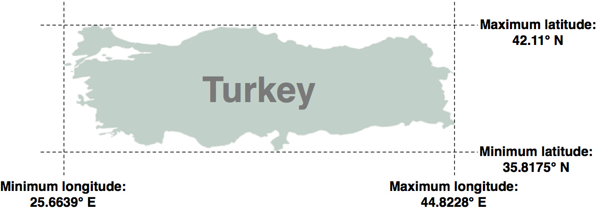
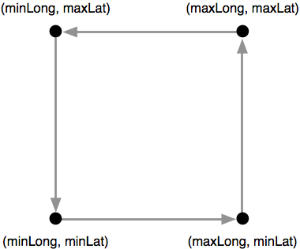
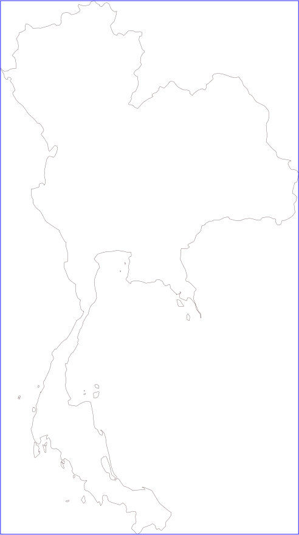
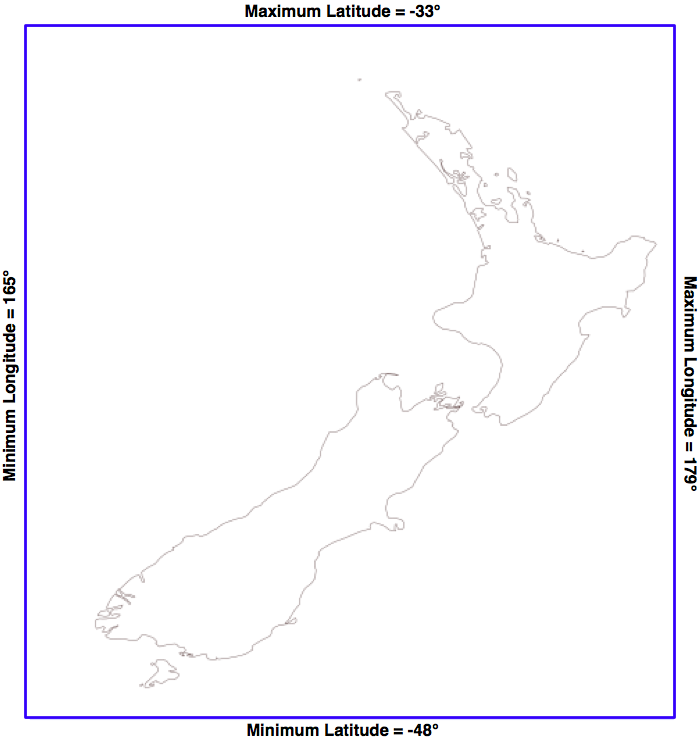
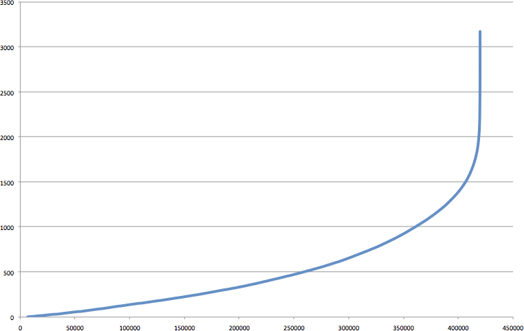

读取和写入地理空间数据#
Reading and writing geospatial data
在本节中，我们将查看一些您可能想要执行的任务示例，这些任务涉及读取和写入矢量和栅格格式的地理空间数据。
In this section, we will look at some examples of tasks you might want to perform which involve reading and writing geospatial data in both vector and raster format.
任务 – 计算世界上每个国家的边界框#
Task – calculate the bounding box for each country in the world
在这个稍微做了些处理的示例中，我们将利用一个shapefile来计算每个国家的最小和最大经纬度值。这些“边界框”可以用于生成特定国家的地图。例如，土耳其的边界框将如下所示：
{kind=link}
首先，从以下地址下载世界边界数据集：
解压.zip文件，并将构成shapefile的各个文件（.dbf、.prj、.shp 和 .shx 文件）放置在合适的目录中。
接下来，我们需要创建一个Python程序，读取每个国家的边界。幸运的是，使用OGR读取shapefile的内容是非常简单的：
from osgeo import ogr
shapefile = ogr.Open("TM_WORLD_BORDERS-0.3.shp")
layer = shapefile.GetLayer(0)
for i in range(layer.GetFeatureCount()):
feature = layer.GetFeature(i)
特征由 几何形状 和一组 字段 组成。对于这个数据，几何形状是定义国家边界的多边形，而字段包含有关国家的各种信息。根据 Readme.txt 文件，shapefile中的字段包括国家的ISO-3166三字母代码（在名为ISO3的字段中）以及国家的名称（在名为NAME的字段中）。这样我们可以通过以下方式获取国家的代码和名称：
countryCode = feature.GetField("ISO3")
countryName = feature.GetField("NAME")
我们还可以使用以下方法获取国家的边界多边形：
geometry = feature.GetGeometryRef()
我们可以对这个几何形状做很多操作。例如，我们可以计算几何形状的质心、测试某点是否位于多边形内，或将多边形转换为WKT格式。然而，在这个例子中，我们想要获取多边形的边界框或**外包络**。我们可以通过以下方式来实现：
minLong, maxLong, minLat, maxLat = geometry.GetEnvelope()
让我们把这些内容整合成一个完整的工作程序：
# calcBoundingBoxes.py
from osgeo import ogr
shapefile = ogr.Open("TM_WORLD_BORDERS-0.3.shp")
layer = shapefile.GetLayer(0)
countries = [] # 存储 (code, name, minLat, maxLat, minLong, maxLong) 元组的列表。
for i in range(layer.GetFeatureCount()):
feature = layer.GetFeature(i)
countryCode = feature.GetField("ISO3")
countryName = feature.GetField("NAME")
geometry = feature.GetGeometryRef()
minLong, maxLong, minLat, maxLat = geometry.GetEnvelope()
countries.append((countryName, countryCode,
minLat, maxLat, minLong, maxLong))
countries.sort()
for name, code, minLat, maxLat, minLong, maxLong in countries:
print("%s (%s) lat=%0.4f..%0.4f, long=%0.4f..%0.4f" %
(name, code, minLat, maxLat, minLong, maxLong))
备注
如果您没有将 TM_WORLD_BORDERS-0.3.shp shapefile 存储在与脚本相同的目录中，您需要在 ogr.Open() 调用中添加shapefile所在目录的路径。如果您愿意，您还可以将 boundingBoxes.shp shapefile 存储在不同的目录中，只需更改创建该shapefile的路径。
运行此程序将输出以下内容：
% python calcBoundingBoxes.py
Afghanistan (AFG) lat=29.4061..38.4721, long=60.5042..74.9157
Albania (ALB) lat=39.6447..42.6619, long=19.2825..21.0542
Algeria (DZA) lat=18.9764..37.0914, long=-8.6672..11.9865
In this slightly contrived example, we will make use of a shapefile to calculate the minimum and maximum latitude/longitude values for each country in the world. This “bounding box” can be used, among other things, to generate a map of a particular country. For example, the bounding box for Turkey would look like this:
Start by downloading the World Borders Dataset from:
http://thematicmapping.org/downloads/world_borders.php
Decompress the .zip archive and place the various files that make up the shapefile (the .dbf, .prj, .shp, and .shx files) together in a suitable directory.
Next, we need to create a Python program which can read the borders for each country. Fortunately, using OGR to read through the contents of a shapefile is trivial:
from osgeo import ogr
shapefile = ogr.Open("TM_WORLD_BORDERS-0.3.shp")
layer = shapefile.GetLayer(0)
for i in range(layer.GetFeatureCount()):
feature = layer.GetFeature(i)
The feature consists of a geometry and a set of fields. For this data, the geometry is a polygon that defines the outline of the country, while the fields contain various pieces of information about the country. According to the Readme.txt file, the fields in this shapefile include the ISO-3166 three-letter code for the country (in a field named ISO3) as well as the name for the country (in a field named NAME). This allows us to obtain the country code and name like this:
countryCode = feature.GetField("ISO3")
countryName = feature.GetField("NAME")
We can also obtain the country’s border polygon using:
geometry = feature.GetGeometryRef()
There are all sorts of things we can do with this geometry. For example, we could calculate the geometry’s centroid, test if a point lies within the polygon, or convert the polygon to WKT format. In this case, however, we want to obtain the bounding box or envelope for the polygon. We can do this in the following way:
minLong,maxLong,minLat,maxLat = geometry.GetEnvelope()
Let’s put all this together into a complete working program:
# calcBoundingBoxes.py
from osgeo import ogr
shapefile = ogr.Open("TM_WORLD_BORDERS-0.3.shp")
layer = shapefile.GetLayer(0)
countries = [] # List of (code,name,minLat,maxLat,
# minLong,maxLong) tuples.
for i in range(layer.GetFeatureCount()):
feature = layer.GetFeature(i)
countryCode = feature.GetField("ISO3")
countryName = feature.GetField("NAME")
geometry = feature.GetGeometryRef()
minLong,maxLong,minLat,maxLat = geometry.GetEnvelope()
countries.append((countryName, countryCode,
minLat, maxLat, minLong, maxLong))
countries.sort()
for name,code,minLat,maxLat,minLong,maxLong in countries:
print "%s (%s) lat=%0.4f..%0.4f, long=%0.4f..%0.4f" \
% (name, code,minLat, maxLat,minLong, maxLong)
备注
If you aren’t storing the TM_WORLD_BORDERS-0.3.shp shapefile in the same directory as the script itself, you will need to add the directory where the shapefile is stored to your ogr.Open() call. You can also store the boundingBoxes.shp shapefile in a different directory if you prefer, by changing the path where this shapefile is created.
Running this program produces the following output:
% python calcBoundingBoxes.py
Afghanistan (AFG) lat=29.4061..38.4721, long=60.5042..74.9157
Albania (ALB) lat=39.6447..42.6619, long=19.2825..21.0542
Algeria (DZA) lat=18.9764..37.0914, long=-8.6672..11.9865
任务 – 将国家边界框保存到 Shapefile 中#
Task – save the country bounding boxes into a shapefile
在这个示例中，之前的代码只是简单地打印了经纬度值，但实际上，将边界框绘制到地图上可能会更有用。为此，我们需要将边界框转换为多边形，并将这些多边形保存到一个shapefile中。
创建一个shapefile涉及以下几个步骤：
定义shapefile数据使用的**空间参考** 在这种情况下，我们将使用WGS84基准和未投影的地理坐标（即经纬度值）。可以通过以下方式使用OGR定义这个空间参考：
from osgeo import osr
spatialReference = osr.SpatialReference()
spatialReference.SetWellKnownGeogCS('WGS84')
创建shapefile文件 我们现在可以使用这个空间参考创建shapefile：
from osgeo import ogr
driver = ogr.GetDriverByName("ESRI Shapefile")
dstFile = driver.CreateDataSource("boundingBoxes.shp")
dstLayer = dstFile.CreateLayer("layer", spatialReference)
定义字段以存储每个特征的元数据 接下来，我们定义几个字段，用于存储每个国家的元数据。我们这里添加两个字段来存储国家名称和ISO-3166代码：
fieldDef = ogr.FieldDefn("COUNTRY", ogr.OFTString)
fieldDef.SetWidth(50)
dstLayer.CreateField(fieldDef)
fieldDef = ogr.FieldDefn("CODE", ogr.OFTString)
fieldDef.SetWidth(3)
dstLayer.CreateField(fieldDef)
创建每个特征的几何形状（即多边形） 我们现在需要为每个特征创建几何形状——在本例中，为国家的边界框定义一个多边形。多边形由一个或多个线性**环**组成；第一个线性环定义了多边形的外部，而额外的环定义了多边形内部的“孔”。在本例中，我们希望定义一个矩形的外部，没有孔：
linearRing = ogr.Geometry(ogr.wkbLinearRing)
linearRing.AddPoint(minLong, minLat)
linearRing.AddPoint(maxLong, minLat)
linearRing.AddPoint(maxLong, maxLat)
linearRing.AddPoint(minLong, maxLat)
linearRing.AddPoint(minLong, minLat)
polygon = ogr.Geometry(ogr.wkbPolygon)
polygon.AddGeometry(linearRing)
备注
您可能注意到，坐标 (minLong, minLat) 被添加到了线性环中两次。这是因为我们正在定义线段而不仅仅是点——第一次调用 AddPoint() 定义了起点，每个后续的 AddPoint() 调用将新线段添加到线性环中。在这种情况下，我们从左下角开始，逆时针绕边界框走一圈，直到回到左下角：
{kind=link}
使用几何形状创建特征 一旦我们得到了多边形，就可以使用它来创建一个特征：
feature = ogr.Feature(dstLayer.GetLayerDefn()) feature.SetGeometry(polygon) feature.SetField("COUNTRY", countryName) feature.SetField("CODE", countryCode) dstLayer.CreateFeature(feature) feature.Destroy()
注意我们如何使用 SetField() 方法来存储特征的元数据。我们还需要调用 Destroy() 方法来关闭特征，一旦我们完成了它，这样确保该特征被保存到shapefile中。
关闭shapefile文件 最后，我们调用输出shapefile的 Destroy() 方法来关闭文件：
dstFile.Destroy()
将所有这些步骤结合起来，并结合之前的代码来计算每个国家的边界框，最终的完整程序如下所示：
# boundingBoxesToShapefile.py import os, os.path, shutil from osgeo import ogr from osgeo import osr # 打开源shapefile。 srcFile = ogr.Open("TM_WORLD_BORDERS-0.3.shp") srcLayer = srcFile.GetLayer(0) # 打开输出shapefile。 if os.path.exists("bounding-boxes"): shutil.rmtree("bounding-boxes") os.mkdir("bounding-boxes") spatialReference = osr.SpatialReference() spatialReference.SetWellKnownGeogCS('WGS84') driver = ogr.GetDriverByName("ESRI Shapefile") dstPath = os.path.join("bounding-boxes", "boundingBoxes.shp") dstFile = driver.CreateDataSource(dstPath) dstLayer = dstFile.CreateLayer("layer", spatialReference) fieldDef = ogr.FieldDefn("COUNTRY", ogr.OFTString) fieldDef.SetWidth(50) dstLayer.CreateField(fieldDef) fieldDef = ogr.FieldDefn("CODE", ogr.OFTString) fieldDef.SetWidth(3) dstLayer.CreateField(fieldDef) # 读取源shapefile中的国家特征。 for i in range(srcLayer.GetFeatureCount()): feature = srcLayer.GetFeature(i) countryCode = feature.GetField("ISO3") countryName = feature.GetField("NAME") geometry = feature.GetGeometryRef() minLong, maxLong, minLat, maxLat = geometry.GetEnvelope() # 将边界框保存为输出shapefile中的特征。 linearRing = ogr.Geometry(ogr.wkbLinearRing) linearRing.AddPoint(minLong, minLat) linearRing.AddPoint(maxLong, minLat) linearRing.AddPoint(maxLong, maxLat) linearRing.AddPoint(minLong, maxLat) linearRing.AddPoint(minLong, minLat) polygon = ogr.Geometry(ogr.wkbPolygon) polygon.AddGeometry(linearRing) feature = ogr.Feature(dstLayer.GetLayerDefn()) feature.SetGeometry(polygon) feature.SetField("COUNTRY", countryName) feature.SetField("CODE", countryCode) dstLayer.CreateFeature(feature) feature.Destroy() # 完成 srcFile.Destroy() dstFile.Destroy()
运行此程序将创建边界框shapefile，我们可以将其绘制到地图上。例如，以下是泰国的轮廓以及从 boundingBox.shp shapefile 获取的边界框：
{kind=link}
我们将在 第8章，使用Python和Mapnik生成地图 中进一步讨论如何绘制这样的地图。
While the previous example simply printed out the latitude and longitude values, it might be more useful to draw the bounding boxes onto a map. To do this, we have to convert the bounding boxes into polygons, and save these polygons into a shapefile.
Creating a shapefile involves the following steps:
Define the spatial reference used by the shapefile’s data. In this case, we’ll use the WGS84 datum and unprojected geographic coordinates (that is latitude and longitude values). You can define this spatial reference using OGR in the following way:
from osgeo import osr spatialReference = osr.SpatialReference() spatialReference.SetWellKnownGeogCS('WGS84')
We can now create the shapefile itself using this spatial reference:
from osgeo import ogr driver = ogr.GetDriverByName("ESRI Shapefile") dstFile = driver.CreateDataSource("boundingBoxes.shp")) dstLayer = dstFile.CreateLayer("layer", spatialReference)
After creating the shapefile, you next define the various fields which will hold the metadata for each feature. In this case, let’s add two fields, to store the country name and ISO-3166 code for each country:
fieldDef = ogr.FieldDefn("COUNTRY", ogr.OFTString) fieldDef.SetWidth(50) dstLayer.CreateField(fieldDef) fieldDef = ogr.FieldDefn("CODE", ogr.OFTString) fieldDef.SetWidth(3) dstLayer.CreateField(fieldDef)
We now need to create the geometry for each feature—in this case, a polygon defining the country’s bounding box. A polygon consists of one or more linear rings; the first linear ring defines the exterior of the polygon, while additional rings define “holes” inside the polygon. In this case, we want a simple polygon with a rectangular exterior and no holes:
linearRing = ogr.Geometry(ogr.wkbLinearRing) linearRing.AddPoint(minLong, minLat) linearRing.AddPoint(maxLong, minLat) linearRing.AddPoint(maxLong, maxLat) linearRing.AddPoint(minLong, maxLat) linearRing.AddPoint(minLong, minLat) polygon = ogr.Geometry(ogr.wkbPolygon) polygon.AddGeometry(linearRing)
备注
You may have noticed that the coordinate (minLong, minLat) was added to the linear ring twice. This is because we are defining line segments rather than just points—the first call to AddPoint() defines the starting point, and each subsequent call to AddPoint() adds a new line segment to the linear ring. In this case, we start in the lower-left corner and move counter-clockwise around the bounding box until we reach the lower-left corner again:
Once we have the polygon, we can use it to create a feature:
feature = ogr.Feature(dstLayer.GetLayerDefn()) feature.SetGeometry(polygon) feature.SetField("COUNTRY", countryName) feature.SetField("CODE", countryCode) dstLayer.CreateFeature(feature) feature.Destroy()
Notice how we use the setField() method to store the feature’s metadata. We also have to call the Destroy() method to close the feature once we have finished with it; this ensures that the feature is saved into the shapefile.
Finally, we call the output shapefile’s Destroy() method to close the file:
dstFile.Destroy()
Putting all this together, and combining it with the code from the previous recipe to calculate the bounding boxes for each country in the World Borders Dataset shapefile, we end up with the following complete program:
# boundingBoxesToShapefile.py import os, os.path, shutil from osgeo import ogr from osgeo import osr # Open the source shapefile. srcFile = ogr.Open("TM_WORLD_BORDERS-0.3.shp") srcLayer = srcFile.GetLayer(0) # Open the output shapefile. if os.path.exists("bounding-boxes"): shutil.rmtree("bounding-boxes") os.mkdir("bounding-boxes") spatialReference = osr.SpatialReference() spatialReference.SetWellKnownGeogCS('WGS84') driver = ogr.GetDriverByName("ESRI Shapefile") dstPath = os.path.join("bounding-boxes", "boundingBoxes.shp") dstFile = driver.CreateDataSource(dstPath) dstLayer = dstFile.CreateLayer("layer", spatialReference) fieldDef = ogr.FieldDefn("COUNTRY", ogr.OFTString) fieldDef.SetWidth(50) dstLayer.CreateField(fieldDef) fieldDef = ogr.FieldDefn("CODE", ogr.OFTString) fieldDef.SetWidth(3) dstLayer.CreateField(fieldDef) # Read the country features from the source shapefile. for i in range(srcLayer.GetFeatureCount()): feature = srcLayer.GetFeature(i) countryCode = feature.GetField("ISO3") countryName = feature.GetField("NAME") geometry = feature.GetGeometryRef() minLong,maxLong,minLat,maxLat = geometry.GetEnvelope() # Save the bounding box as a feature in the output # shapefile. linearRing = ogr.Geometry(ogr.wkbLinearRing) linearRing.AddPoint(minLong, minLat) linearRing.AddPoint(maxLong, minLat) linearRing.AddPoint(maxLong, maxLat) linearRing.AddPoint(minLong, maxLat) linearRing.AddPoint(minLong, minLat) polygon = ogr.Geometry(ogr.wkbPolygon) polygon.AddGeometry(linearRing) feature = ogr.Feature(dstLayer.GetLayerDefn()) feature.SetGeometry(polygon) feature.SetField("COUNTRY", countryName) feature.SetField("CODE", countryCode) dstLayer.CreateFeature(feature) feature.Destroy() # All done. srcFile.Destroy() dstFile.Destroy()
The only unexpected twist in this program is the use of a subdirectory called bounding-boxes that is used to store the output shapefile. Because a shapefile is actually made up of multiple files on disk (a .dbf file, a .prj file, a .shp file, and a .shx file), it is easier to place these together in a subdirectory. We use the Python Standard Library module shutil to delete the previous contents of this directory, and then os.mkdir() to create it again.
Running this program creates the bounding box shapefile, which we can then draw onto a map. For example, here is the outline of Thailand along with a bounding box taken from the boundingBox.shp shapefile:
We will be looking at how to draw maps like this in Chapter 8, Using Python and Mapnik to Generate Maps.
任务 – 使用数字高程图分析高度数据#
Task – analyze height data using a digital elevation map
数字高程图（DEM） 是一种栅格地理空间数据格式，其中每个像素值表示地球表面某一点的高度。在上一章中，我们遇到过DEM文件，那里我们展示了两个提供此类信息的数据源：涵盖美国的国家高程数据集（National Elevation Dataset）和提供全球DEM文件的GLOBE数据集。
由于DEM文件包含高度数据，因此分析某一地区的高度值可能非常有趣。例如，我们可以绘制一个直方图，显示一个国家区域内的高度分布。让我们使用来自GLOBE数据集的DEM数据，并计算一个该数据的高度直方图。
为了简化问题，我们将选择一个小的、被海洋包围的国家：新西兰。
备注
我们选择一个小国家是为了避免处理过多的数据，同时选择一个被海洋包围的国家是为了让我们可以检查所有位于边界框内的点，而不需要使用多边形来排除国界之外的点。
要下载DEM数据，请访问GLOBE网站（http://www.ngdc.noaa.gov/mgg/topo/globe.html），然后点击 在线获取数据（Get Data Online） 超链接。我们将使用该地区已有的数据，因此点击 任何或所有16个“瓦片” 超链接。新西兰位于L瓦片中，因此点击该瓦片的超链接以下载。
下载的文件将名为 l10g.zip （如果您选择以GZIP格式下载瓦片，则文件名为*l10g.gz*）。如果您解压它，最终会得到一个名为 l10g 的文件，里面包含原始的高程数据。
单独来看，这个文件并不是很有用——它需要被地理参考到地球表面，这样您才能将每个高度值与其在地球上的位置对应起来。为了做到这一点，您需要下载相关的头文件。不幸的是，GLOBE网站使得这一过程相当复杂；为预制瓦片提供的头文件可以在以下位置找到：
http://www.ngdc.noaa.gov/mgg/topo/elev/esri/hdr
下载名为l10g.hdr的文件，并将其放在与您之前下载的l10g文件相同的目录中。然后，您可以使用GDAL读取DEM文件：
from osgeo import gdal
dataset = gdal.Open("l10g")
您一定已经注意到，下载的l10g瓦片不仅仅覆盖新西兰——它还包括了整个澳大利亚、马来西亚、巴布亚新几内亚以及其他一些东亚国家。为了仅使用新西兰的高度数据，我们必须能够识别栅格DEM的相关部分——也就是覆盖新西兰的x和y坐标范围。我们首先查看地图，并确定包含整个新西兰而不包括其他国家的最小和最大纬度/经度值：
{kind=link}
四舍五入到最近的整数，经度/纬度的边界框为（165, -48）…（179, -33）。这是我们要扫描的区域，涵盖新西兰的全部。
然而，有一个问题：栅格数据由像素或“单元格”组成，它们是通过x和y坐标来标识的，而不是经纬度值。我们必须将经度和纬度转换为x和y坐标。为了做到这一点，我们需要使用栅格DEM的 仿射变换 。
如果您记得，在 第3章，Python地理空间开发库 中，我们讨论过仿射变换是一个将地理坐标（纬度和经度值）映射到栅格（x，y）坐标的复杂系统。幸运的是，我们不需要直接处理这些公式，因为GDAL会为我们做这件事。我们首先获取数据集的仿射变换：
t = dataset.GetGeoTransform()
使用这个变换，我们可以将（x，y）坐标转换为对应的经纬度值。然而，在这种情况下，我们想做的是相反的——我们希望从经纬度获取对应的x和y坐标。
为此，我们需要反转仿射变换。同样，GDAL会为我们完成这项工作：
success,tInverse = gdal.InvGeoTransform(t)
if not success:
print "Failed!"
sys.exit(1)
备注
有些情况下仿射变换无法反转。这就是为什么 gdal.InvGeoTransform() 返回一个 success 标志和反转变换的原因。然而，对于这组特定的DEM数据，仿射变换应该始终是可反转的。
现在我们有了反转后的仿射变换，就可以将纬度和经度转换为x和y坐标了，像这样：
x,y = gdal.ApplyGeoTransform(tInverse, longitude, latitude)
通过这个，我们终于可以确定覆盖我们感兴趣区域的最小和最大（x，y）坐标：
x1,y1 = gdal.ApplyGeoTransform(tInverse, minLong, minLat)
x2,y2 = gdal.ApplyGeoTransform(tInverse, maxLong, maxLat)
minX = int(min(x1, x2))
maxX = int(max(x1, x2))
minY = int(min(y1, y2))
maxY = int(max(y1, y2))
现在我们知道了我们感兴趣的DEM部分的x和y坐标，我们可以使用GDAL读取单独的高度值。我们首先获取包含DEM数据的栅格波段：
band = dataset.GetRasterBand(1)
备注
GDAL波段编号从1开始。我们使用的DEM数据只有一个栅格波段。
现在我们有了栅格波段，可以使用 band.ReadRaster() 方法读取原始的DEM数据。 ReadRaster() 方法的样子如下：
band.ReadRaster(x, y, width, height, dWidth, dHeight, pixelType)
此方法接受以下参数：
x 是从栅格波段左侧到要读取部分左侧的像素数量
y 是从栅格波段顶部到要读取部分顶部的像素数量
width 是要读取的像素数
height 是要读取的像素数
dWidth 是结果数据的宽度
dHeight 是结果数据的高度
pixelType 是一个常量，定义每个像素值的数据字节数及数据的解释方式
备注
通常，您会将dWidth和dHeight设置为与width和height相同的值；如果您不这样做，栅格数据在读取时将被缩放。
ReadRaster()方法返回一个包含栅格数据的原始字节序列的字符串。然后，您可以使用标准库模块struct从这个字符串中读取单独的整数高度值：
values = struct.unpack("<" + ("h" * width), data)
备注
注意，我们使用”h”格式代码来读取数据，将每对字节当作一个有符号的16位整数读取。”<” 格式代码强制使用小端字节序。这与DEM文件使用的格式匹配。
将这些内容整合在一起，我们可以使用GDAL打开栅格数据文件，并读取覆盖新西兰的边界框内的所有像素值：
# histogram.py
import sys, struct
from osgeo import gdal
from osgeo import gdalconst
minLat = -48
maxLat = -33
minLong = 165
maxLong = 179
dataset = gdal.Open("l10g")
band = dataset.GetRasterBand(1)
t = dataset.GetGeoTransform()
success,tInverse = gdal.InvGeoTransform(t)
if not success:
print "Failed!"
sys.exit(1)
x1,y1 = gdal.ApplyGeoTransform(tInverse, minLong, minLat)
x2,y2 = gdal.ApplyGeoTransform(tInverse, maxLong, maxLat)
minX = int(min(x1, x2))
maxX = int(max(x1, x2))
minY = int(min(y1, y2))
maxY = int(max(y1, y2))
width = (maxX - minX) + 1
fmt = "<" + ("h" * width)
for y in range(minY, maxY+1):
scanline = band.ReadRaster(minX, y,width, 1,
width, 1,
gdalconst.GDT_Int16)
values = struct.unpack(fmt, scanline)
for value in values:
备注
如果您将l10g文件放置在其他目录中，别忘了在gdal.Open()语句中添加目录路径。
width = (maxX - minX) + 1
fmt = "<" + ("h" * width)
histogram = {} # 映射高度到对应的像素数
for y in range(minY, maxY+1):
scanline = band.ReadRaster(minX, y,width, 1,
width, 1,
gdalconst.GDT_Int16)
values = struct.unpack(fmt, scanline)
for value in values:
try:
histogram[value] += 1
except KeyError:
histogram[value] = 1
for height in sorted(histogram.keys()):
print height,histogram[height]
运行此程序，您将看到一列高度（单位：米）和该高度对应的像素数量：
-500 2607581
1 6641
2 909
3 1628
...
3097 1
3119 2
3173 1
这揭示了一个最后的问题：有大量像素的值为-500。发生了什么？显然，-500不是有效的高度值。GLOBE文档解释了这一点：
"每个瓦片都包含值为-500的海洋数据，海洋区域的值范围在-500到陆地的最小值之间。"
因此，所有这些值为-500的点表示的是海洋上的像素。幸运的是，这些像素很容易排除；每个栅格文件都包含一个无效数据值的概念，这些值用于标识没有有效数据的像素。GDAL提供了GetNoDataValue()方法，使我们可以排除这些像素：
for value in values:
if value != band.GetNoDataValue():
try:
histogram[value] += 1
except KeyError:
histogram[value] = 1
这最终给出了新西兰的高度直方图。如果您愿意，您可以使用这些数据创建图表。例如，以下图表显示了低于某一给定高度的总像素数：
{kind=link}
A Digital Elevation Map (DEM) is a raster geospatial data format where each pixel value represents the height of a point on the Earth’s surface. We encountered DEM files in the previous chapter, where we saw two examples of data sources that supply this type of information: the National Elevation Dataset covering the United States, and GLOBE which provides DEM files covering the entire Earth.
Because a DEM file contains height data, it can be interesting to analyze the height values for a given area. For example, we could draw a histogram showing how much of a country’s area is at a certain elevation. Let’s take some DEM data from the GLOBE dataset, and calculate a height histogram using that data.
To keep things simple, we will choose a small country surrounded by ocean: New Zealand.
备注
We’re using a small country so that we don’t have too much data to work with, and we’re using a country surrounded by ocean so that we can check all the points within a bounding box, rather than having to use a polygon to exclude points outside of the country’s boundaries.
To download the DEM data, go to the GLOBE website (http://www.ngdc.noaa. gov/mgg/topo/globe.html) and click on the Get Data Online hyperlink. We’re going to use the data already calculated for this area of the world, so click on the Any or all 16 “tiles” hyperlink. New Zealand is in tile L, so click on the hyperlink for this tile to download it.
The file you download will be called l10g.zip (or l10g.gz if you chose to download the tile in GZIP format). If you decompress it, you will end up with a single file called l10g containing the raw elevation data.
By itself, this file isn’t very useful—it needs to be georeferenced onto the Earth’s surface so that you can match up each height value with its position on the Earth. To do this, you need to download the associated header file. Unfortunately, the GLOBE website makes this rather difficult; the header files for the premade tiles can be found at:
http://www.ngdc.noaa.gov/mgg/topo/elev/esri/hdr
Download the file named l10g.hdr and place it into the same directory as the l10g file you downloaded earlier. You can then read the DEM file using GDAL:
from osgeo import gdal
dataset = gdal.Open("l10g")
As you must have noticed when you downloaded the l10g tile that this tile covers much more than just New Zealand—all of Australia is included, as well as Malaysia, Papua New Guinea, and several other East-Asian countries. To work with the height data for just New Zealand, we have to be able to identify the relevant portion of the raster DEM—that is, the range of x and y coordinates which cover New Zealand. We start by looking at a map and identifying the minimum and maximum latitude/ longitude values which enclose all of New Zealand, but no other country:
Rounded to the nearest whole degree, we get a longitude/latitude bounding box of (165, -48)…(179, -33). This is the area we want to scan to cover all of New Zealand.
There is, however, a problem: the raster data consists of pixels or “cells” identified by x and y coordinates, not longitude and latitude values. We have to convert from longitudes and latitudes into x and y coordinates. To do this, we need to make use of the raster DEM’s affine transformation.
If you remember, back in Chapter 3, Python Libraries for Geospatial Development, we discussed that an affine transformation is a complex system for mapping geographic coordinates (latitude and longitude values) into raster (x, y) coordinates. Fortunately we don’t have to deal with these formulas directly, as GDAL will do it for us. We start by obtaining our dataset’s affine transformation:
t = dataset.GetGeoTransform()
Using this transformation, we can convert an (x, y) coordinate into its associated latitude and longitude value. In this case, however, we want to do the opposite—we want to take a latitude and longitude, and calculate the associated x and y coordinate.
To do this, we have to invert the affine transformation. Once again, GDAL will do this for us:
success,tInverse = gdal.InvGeoTransform(t)
if not success:
print "Failed!"
sys.exit(1)
备注
There are some cases where an affine transformation can’t be inverted. This is why gdal.InvGeoTransform() returns a success flag as well as the inverted transformation. With this particular set of DEM data, however, the affine transformation should always be invertible.
Now that we have the inverse affine transformation, it is possible to convert from a latitude and longitude into an x and y coordinate, like this:
x,y = gdal.ApplyGeoTransform(tInverse, longitude, latitude)
Using this, we can finally identify the minimum and maximum (x, y) coordinates that cover the area we are interested in:
x1,y1 = gdal.ApplyGeoTransform(tInverse, minLong, minLat)
x2,y2 = gdal.ApplyGeoTransform(tInverse, maxLong, maxLat)
minX = int(min(x1, x2))
maxX = int(max(x1, x2))
minY = int(min(y1, y2))
maxY = int(max(y1, y2))
Now that we know the x and y coordinates for the portion of the DEM that we’re interested in, we can use GDAL to read in the individual height values. We start by obtaining the raster band that contains the DEM data:
band = dataset.GetRasterBand(1)
备注
GDAL band numbers start at one. There is only one raster band in the DEM data we’re using.
Now that we have the raster band, we can use the band.ReadRaster() method to read the raw DEM data. This is what the ReadRaster() method looks like:
band.ReadRaster(x, y, width, height, dWidth, dHeight, pixelType)
This method takes the following parameters:
x is the number of pixels from the left-hand side of the raster band to the left-hand side of the portion of the band to read from
y is the number of pixels from the top of the raster band to the top of the portion of the band to read from
width is the number of pixels across to read
height is the number of pixels down to read
dWidth is the width of the resulting data
dHeight is the height of the resulting data
pixelType is a constant defining how many bytes of data there are for each pixel value, and how that data is to be interpreted
备注
Normally, you would set dWidth and dHeight to the same value as width and height; if you don’t do this, the raster data will be scaled up or down when it is read.
The ReadRaster() method returns a string containing the raster data as a raw sequence of bytes. You can then read the individual integer height values from this string using the struct standard library module:
values = struct.unpack("<" + ("h" * width), data)
备注
Notice that we use the h format code to read through the data, treating each pair of bytes as a signed 16-bit integer. The < format code forces the use of little-endian byte order. This matches the format used by the DEM file.
Putting all this together, we can use GDAL to open the raster data file and read all the pixel values within the bounding box surrounding New Zealand:
# histogram.py
import sys, struct
from osgeo import gdal
from osgeo import gdalconst
minLat = -48
maxLat = -33
minLong = 165
maxLong = 179
dataset = gdal.Open("l10g")
band = dataset.GetRasterBand(1)
t = dataset.GetGeoTransform()
success,tInverse = gdal.InvGeoTransform(t)
if not success:
print "Failed!"
sys.exit(1)
x1,y1 = gdal.ApplyGeoTransform(tInverse, minLong, minLat)
x2,y2 = gdal.ApplyGeoTransform(tInverse, maxLong, maxLat)
minX = int(min(x1, x2))
maxX = int(max(x1, x2))
minY = int(min(y1, y2))
maxY = int(max(y1, y2))
width = (maxX - minX) + 1
fmt = "<" + ("h" * width)
for y in range(minY, maxY+1):
scanline = band.ReadRaster(minX, y,width, 1,
width, 1,
gdalconst.GDT_Int16)
values = struct.unpack(fmt, scanline)
for value in values:
备注
Don’t forget to add a directory path to the gdal.Open() statement if you placed the l10g file in a different directory.
width = (maxX - minX) + 1
fmt = "<" + ("h" * width)
histogram = {} # Maps height to # pixels with that height.
for y in range(minY, maxY+1):
scanline = band.ReadRaster(minX, y,width, 1,
width, 1,
gdalconst.GDT_Int16)
values = struct.unpack(fmt, scanline)
for value in values:
try:
histogram[value] += 1
except KeyError:
histogram[value] = 1
for height in sorted(histogram.keys()):
print height,histogram[height]
If you run this, you will see a list of heights (in meters) and how many pixels there are at that height:
-500 2607581
1 6641
2 909
3 1628
...
3097 1
3119 2
3173 1
This reveals one final problem: there are a large number of pixels with a value of -500. What is going on here? Clearly -500 is not a valid height value. The GLOBE documentation explains this as follows:
"Every tile contains values of -500 for oceans, with no values between -500 and the
minimum value for land noted here."
So all those points with a value of -500 represents pixels over the ocean. Fortunately, it is easy to exclude these; every raster file includes the concept of a no data value, which is used for pixels without valid data. GDAL includes the GetNoDataValue() method that allows us to exclude these pixels:
for value in values:
if value != band.GetNoDataValue():
try:
histogram[value] += 1
except KeyError:
histogram[value] = 1
This finally gives us a histogram of the heights across New Zealand. You could create a graph using this data if you wished. For example, the following chart shows the total number of pixels at or below a given height: